1.5. 随机梯度下降¶
Stochastic Gradient Descent (SGD) 是一种简单但又非常高效的方式判别式学习方法，比如凸损失函数的线性分类器如 Support Vector Machines 和 Logistic Regression. 虽然SGD已经在机器学习社区出现很长时间，但是在近期在大规模机器学习上受到了相当大数量的关注。
SGD 已经被成功应用到大规模和稀疏机器学习问题上，通常为文本分类和自然语言处理。如果给定数据是稀疏的，那么该模块中的分类器 很容易把问题规模缩放到超过10^5训练样本和超过10^5的特征数量。
SGD的优势如下：
- 高效性.
- 容易实现 (lots of opportunities for code tuning大量代码调整的机会).
SGD缺点如下：
- SGD需要许多超参数,比如正则化参数、迭代次数
- SGD 对特征规模比较敏感(应该是特征维数)
1.5.1. 分类¶
Warning
请确保在拟合模型之前把训练数据打乱(shuffle)或者使用 shuffle=True 设置项来在每次迭代后打乱训练数据。
类 SGDClassifier 实现了一个简单的随机梯度下降的程序，该程序支持分类中不同的损失函数和罚项
同其他分类器一样，SGD需要拟合两个数组(向量): X为存储训练样本的数组，大小为[n_samples,n_features]，另一个是Y,大小为[n_samples], 用来存放对于每个输入的目标值(或者类标label)
>>> from sklearn.linear_model import SGDClassifier
>>> X = [[0., 0.], [1., 1.]]
>>> y = [0, 1]
>>> clf = SGDClassifier(loss="hinge", penalty="l2")
>>> clf.fit(X, y)
SGDClassifier(alpha=0.0001, average=False, class_weight=None, epsilon=0.1,
eta0=0.0, fit_intercept=True, l1_ratio=0.15,
learning_rate='optimal', loss='hinge', n_iter=5, n_jobs=1,
penalty='l2', power_t=0.5, random_state=None, shuffle=True,
verbose=0, warm_start=False)
拟合之后，模型就可以用来预测新的输入:
>>> clf.predict([[2., 2.]])
array([1])
SGD为训练数据拟合了一个线性模型。成员变量 coef_ 存储的是模型的参数:
>>> clf.coef_
array([[ 9.9..., 9.9...]])
成员变量 intercept_ 存储的是截距 (又称为 offset 或者 bias,偏置):
>>> clf.intercept_
array([-9.9...])
无论模型是否使用截距，比如 一个有偏置的超平面，是由 fit_intercept 参数来控制(待校正)。
获取到超平面的符号距离使用 SGDClassifier.decision_function:
>>> clf.decision_function([[2., 2.]])
array([ 29.6...])
具体的损失函数可以通过 loss 参数来设置。SGDClassifier 支持以下几种损失函数:
loss="hinge": (soft-margin) linear Support Vector Machine,loss="modified_huber": smoothed hinge loss,loss="log": logistic regression,- and all regression losses below.
上述中前两个损失函数lazy的，它们只有在某个样本违反了margin（间隔）限制才会更新模型参数，这样是的训练过程非常有效，并且可以应用在稀疏 模型上，甚至当使用了L2罚项的时候。
使用loss="log"或者loss="modified_huber"启用
predict_proba 方法,该方法给出了对于每个样本  的概率估计
的概率估计  的一个向量:
的一个向量:
>>> clf = SGDClassifier(loss="log").fit(X, y)
>>> clf.predict_proba([[1., 1.]])
array([[ 0.00..., 0.99...]])
具体的罚项可以通过 penalty 参数。SGD支持一下几种罚项:
penalty="l2": L2 norm penalty oncoef_.penalty="l1": L1 norm penalty oncoef_.penalty="elasticnet": Convex combination of L2 and L1;(1 - l1_ratio) * L2 + l1_ratio * L1.
- 默认的设置是
penalty="l2"。L1罚项会导致稀疏的解，使大多数稀疏为0。弹性网络解决了当属性高度相关情况下L1罚项的不足。参数 l1_ratio控制 L1 和 L2 罚项的凸组合。
SGDClassifier 通过组合多个“one versus all(OVA)”形式的二分类器来支持多类分类。
对于  类中每个类别，二分类器通过判别该类和其它
类中每个类别，二分类器通过判别该类和其它  类来学习。在测试阶段，
我们计算为每个分类器计算其置信度得分（比如 与超平面的符号距离）。下图说明了OVA方式在iris数据集上的情况。
虚线表示三个OVA分类器;背景颜色显示了由三个分类器诱导的决策面。
类来学习。在测试阶段，
我们计算为每个分类器计算其置信度得分（比如 与超平面的符号距离）。下图说明了OVA方式在iris数据集上的情况。
虚线表示三个OVA分类器;背景颜色显示了由三个分类器诱导的决策面。
在多分类问题中 coef_ 是一个``shape=[n_classes, n_features]`` 的二维数组 ,
, intercept_ 是一个 shape=[n_classes] 的一维数组。 coef_ 的第i行
存储对第i类的OVA分类器的权重向量。类别通过增序索引（参考属性 classes_）。
请注意，原则上由于 loss="log" 和 loss="modified_huber" 允许创建
概率模型，所以这两项对于OVA(one-vs-all)分类更加合适。
SGDClassifier 支持加权类别和加权实例(或者说加权的样本)，通过
class_weight 和 sample_weight 两个拟合参数。请看下述几个例子，
参考文档 SGDClassifier.fit 获取更多信息。
Examples:
SGDClassifier 支持平均SGD(ASGD).Averaging可以通过设置 `average=True` 来启用。
ASGD 通过计算普通SGD算法中每次迭代后每个样本的系数的平均值来处理。当使用ASGD时，学习率可以大很多甚至为常量，
在一些数据集上训练时速度加快。。
对于带logistic损失的分类，提供了另外一种带平均策略的SGD变体，使用了随机平均梯度算法（SAG,
详细参考论文：Minimizing Finite Sums with the Stochastic Average Gradient）。
实现的程序为 LogisticRegression.
1.5.2. 回归¶
SGDRegressor类实现了一个简单的随机梯度下降的学习算法的程序，该程序支持不同的损失函数和罚项 来拟合线性回归模型。SGDRegressor对于非常大的训练样本(>10.000)的回归问题是非常合适的。 对于其他问题我们推荐Ridge,:class:Lasso, 或者ElasticNet。
具体损失函数可以通过设置 loss 参数。 SGDRegressor 支持以下几种损失函数:
loss="squared_loss": Ordinary least squares,loss="huber": Huber loss for robust regression,loss="epsilon_insensitive": linear Support Vector Regression.
Huber 和 epsilon-insensitive 损失函数可以用于鲁棒回归。insensitive区域的宽度可以
通过参数 epsilon 指定，该参数由目标变量的规模来决定。
SGDRegressor 和 SGDClassifier 一样支持平均SGD。Averaging
可以通过设置 `average=True` 来启用。
对于带平方损失和l2罚项的回归，提供了另外一个带平均策略的SGD的变体，使用了随机平均梯度算法(SAG),
实现程序为 Ridge 。
1.5.3. 稀疏数据上的随机梯度下降¶
Note
稀疏实现和稠密实现结果有轻微不同，因为截距部分的收敛的学习率的影响。
对于以下格式 scipy.sparse 任意给定矩阵的稀疏数据有内建的支持方法。 然而，为了最大化效率应该使用CSR矩阵格式，定义在 scipy.sparse.csr_matrix.
1.5.4. 复杂度¶
- SGD主要的优势是它的高效性，和训练样本的数量线性相关。如果 X 是一个大小为(n ,p)的矩阵，则训练的代价为
- 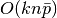 ，其中K是迭代的次数(epochs), 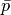 是每个样本中非零属性(每个维度)的平均个数。
然而，最新理论研究结果显示，为了获得一些期望的最优的精度并不会随着训练样本集的大小增加而增加运行时间。
1.5.5. Tips on Practical Use¶
随机梯度下降对于特征的尺度非常敏感，所以强烈推荐尺度化数据。比如，把每个输入向量X内的属性尺度化到区间[0,1]或者[-1,+1] 上，或者把X标准化为均值为0，方差为1的数据。请注意，相同的 尺度也必须应用到测试向量上以保证得到有意义的结果。上述可以通过 类
StandardScaler来处理from sklearn.preprocessing import StandardScaler scaler = StandardScaler() scaler.fit(X_train) # Don't cheat - fit only on training data X_train = scaler.transform(X_train) X_test = scaler.transform(X_test) # apply same transformation to test data如果你的特征向量的属性中有固定的尺度（比如词频或者指示特征）,则不必进行尺度化。
在使用
GridSearchCV时最好的做法是找到一个合适的 正则化项通常取值范围为
10.0**-np.arange(1,7)。在实际经验中，我们发现SGD算法在大约10^6训练样本之后趋于收敛。因此， 对于迭代次数比较合理的估计为
n_iter = np.ceil(10**6 / n)， 其中，n是训练集的大小如果在使用PCA进行特征提取中应用SGD,通常比较好的做法是使用常量 c 将特征值尺度化， 比如使训练数据的L2 norm 平均值为1.
我们发现 Averaged SGD 在特征数据比较大以及eta0很大时更加有效。
参考资料:
- “Efficient BackProp” Y. LeCun, L. Bottou, G. Orr, K. Müller - In Neural Networks: Tricks of the Trade 1998.
1.5.6. 数学表达¶
给定一组训练样本 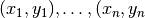 其中，
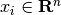 and 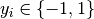, 我们的目标是
学习一个线性的判分函数 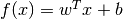 ， 模型参数为
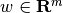 ，截距为  . 为了实现预测，
我们只需看
. 为了实现预测，
我们只需看  的符号。通常求解模型参数的方式是通过最小化下面的训练误差
的符号。通常求解模型参数的方式是通过最小化下面的训练误差
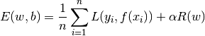
其中，  表示损失函数（模型预测值和实际值的误差），
表示损失函数（模型预测值和实际值的误差）， 是正则化项（或称作罚项），
用来惩罚模型的复杂性（避免模型过于复杂导致过拟合）； 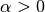 是非负的超参数。
是正则化项（或称作罚项），
用来惩罚模型的复杂性（避免模型过于复杂导致过拟合）； 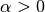 是非负的超参数。
不同损失函数的选择会产生不同的分类器，比如
- Hinge: (soft-margin) Support Vector Machines.
- Log: Logistic Regression.
- Least-Squares: Ridge Regression.
- Epsilon-Insensitive: (soft-margin) Support Vector Regression.
上述所有的损失函数均可以看做误分类误差的上界，如下图所示：

比较流行的正则化项 的选择包括：
- L2 norm: 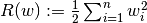,
- L1 norm: 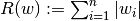, which leads to sparse solutions.
- Elastic Net: 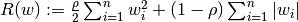, a convex combination of L2 and L1, where
is given by
1 - l1_ratio.
下图显示不同的正则化项在 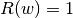 时的参数平面的曲线。
1.5.6.1. SGD¶
随机梯度下降是无约束最优化问题。相比批梯度下降（BGD），SGD通过每次只考虑单一训练样本来估计实际的梯度。
类 SGDClassifier 实现了一个一阶的SGD学习程序。该算法遍历训练样本，对于每个
样本根据下面的更新规则来更新模型参数。
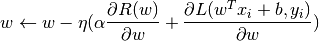
其中，  为学习率，用来控制参数空间的步长。截距
为学习率，用来控制参数空间的步长。截距  和w更新方式相似但是没有正则项。
和w更新方式相似但是没有正则项。
学习率 既可以是常量，也可以逐渐变小。对于分类问题，默认的学习率设定 （learning_rate='optimal'）
由以下公式给出
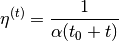
其中  是时间步长（总共有 n_samples * n_iter 的时间步长）， 基于
一个启发式的算法( Léon Bottou 提出的)来决定,比如 期望的初始的更新为权重的数量。
（假设训练样本的模长为1）.精确的定义在
是时间步长（总共有 n_samples * n_iter 的时间步长）， 基于
一个启发式的算法( Léon Bottou 提出的)来决定,比如 期望的初始的更新为权重的数量。
（假设训练样本的模长为1）.精确的定义在 BaseSGD 的 _init_t 中可以找到。(需校对)
对于回归问题，默认的学习率呈反比例趋势变化(learning_rate='invscaling'),由以下公式给出
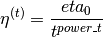
其中 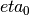 和 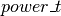 是由用户选择 eta0 and power_t
的超参数。
使用固定的学习率则设置 learning_rate='constant' ,并且使用 eta0 来指定学习率。
模型参数可以通过 coef_ 和 intercept_ 来访问：
- 成员变量
coef_保存权重- 成员变量
intercept_保存截距

参考资料:
- “Solving large scale linear prediction problems using stochastic gradient descent algorithms” T. Zhang - In Proceedings of ICML ‘04.
- “Regularization and variable selection via the elastic net” H. Zou, T. Hastie - Journal of the Royal Statistical Society Series B, 67 (2), 301-320.
- “Towards Optimal One Pass Large Scale Learning with Averaged Stochastic Gradient Descent” Xu, Wei
1.5.7. 实现细节¶
SGD的实现受Léon Bottou Stochastic Gradient SVM 的影响。 类似于SvmSGD，权重向量表达为 一个标量和一个向量的内积，这样保证在使用L2正则项时可以有效更新权重。对于 稀疏的特征向量，截距的更新通过一个更小的学习率（乘以0.01）来避免实际更新过于频繁。训练样本按顺序选择并且学习率 在每次观测样本后下降。我们采用了 Shalev-Shwartz et al. 2007 的学习率变化方案。对于多分类问题，使用 “one versus all” 方法。对于L1正则项（以及弹性网络）我们使用了由 Tsuruoka等人提出的截断梯度算法，代码由Cython编写。
参考资料:
- “Stochastic Gradient Descent” L. Bottou - Website, 2010.
- “The Tradeoffs of Large Scale Machine Learning” L. Bottou - Website, 2011.
- “Pegasos: Primal estimated sub-gradient solver for svm” S. Shalev-Shwartz, Y. Singer, N. Srebro - In Proceedings of ICML ‘07.
- “Stochastic gradient descent training for l1-regularized log-linear models with cumulative penalty” Y. Tsuruoka, J. Tsujii, S. Ananiadou - In Proceedings of the AFNLP/ACL ‘09.